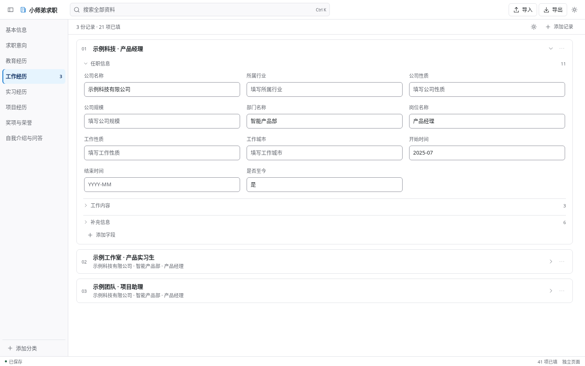

本地资料管理 · CHROME 侧栏填写
把求职资料整理好，
填表时随手取用。
姓名、学校、实习经历和项目描述，集中放在一处。打开招聘网页，选中输入框，再点击侧栏里的对应内容，少一些来回查找和复制。
当前为安装候选版本，使用 Chrome 116+ 开发者模式安装。English guide

从整理到填写
按自己的习惯维护资料
直接在界面中编辑分类、经历和字段，也可以使用独立 HTML 页面或 Excel 模板。
侧栏查找，逐项填写
选中网页输入框后点击对应资料。长段描述可以展开查看，遇到复杂控件时可手动复制粘贴。
资料留在当前浏览器
编辑后自动保存，支持导出备份。换设备前先导出，需要口令保护时可使用加密备份。
选择需要的文件
Chrome 插件
解压后，在扩展管理页选择「加载已解压的扩展程序」。
独立 HTML 资料维护页
保存到本机，用浏览器打开即可编辑。通过导入导出与插件交换资料。
Excel 资料模板
20 个分类、230 个字段。在「填写内容」列录入资料，保存后导入。
全部文件与 SHA-256 校验值见 GitHub 下载页。使用这些文件无需安装 Node.js。
用得顺手的话，欢迎到 GitHub 仓库右上角点 Star 收藏，方便下次找到。
使用前可以了解这些
会自动填写整张表单或提交申请吗？
每次填写一个选中的字段，由你检查并提交。复杂下拉框、日期选择器和附件仍按网站流程操作。不同招聘网站的控件需要分别验证。
HTML 页面与插件会同步资料吗？
两者通过导入导出交换资料，不自动同步。导入会替换当前资料，请先备份并核对预览。
资料存在哪里？
产品将资料保存在当前浏览器，不调用网络服务。你主动填写的内容会交给目标网站，复制会写入系统剪贴板。本地资料、Excel 和 JSON 未加密，.applyvault 备份可设置口令加密。
遇到问题在哪里反馈？
先查看 常见问题。操作疑问可在 Discussions 提问，异常可提交 Issue，请去掉截图和地址中的个人信息。
JobFill, a local job application profile manager
Keep your education, work experience and project descriptions together. Select a webpage field, then click a saved value in the Chrome side panel. A standalone HTML manager and an Excel template are included. The app interface is in Chinese.
Read the English installation guide